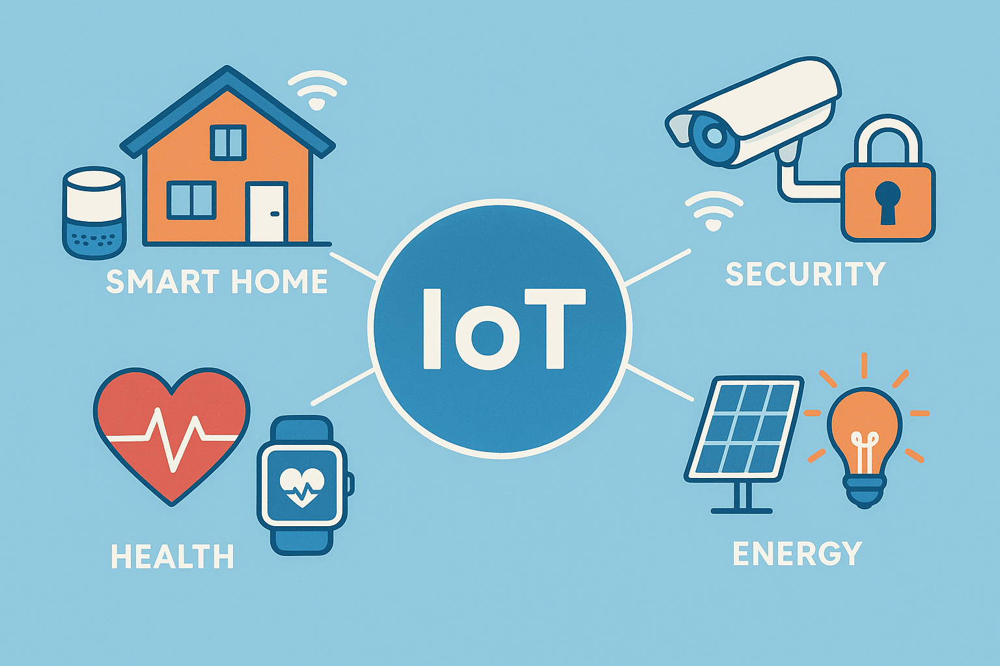
Az „okos otthon IoT” kifejezésnek nincs egyetlen, hivatalosan elfogadott nemzetközi rövidítése, de több elterjedt mozaikszó és rövidítés használatos a szakirodalomban és a piacon:
IoT-SH vagy SH-IoT – kombinált formák, amikor kifejezetten az okos otthon IoT eszközeire utalnak.
HIoT (Home Internet of Things) – kevésbé elterjedt, de szakmai körökben előfordul, kifejezetten otthoni IoT eszközökre utal.
HA (Home Automation) – gyakran használják az automatizált otthoni rendszerekre.
AAL (Ambient Assisted Living) – speciális terület, ahol az IoT és okos otthon rendszerek az idősek vagy fogyatékkal élők támogatását szolgálják.
IoT (Internet of Things) – maga az alapfogalom, minden hálózatba kapcsolt eszközre vonatkozik.
SH (Smart Home) – rövidítés az „okos otthon” kifejezésre.
Nikola Tesla távirányítója Tesla bemutatta az első rádióvezérelt szerkezetet (egy kis hajót), amelyet sokan az okos otthonok előfutárának tekintenek
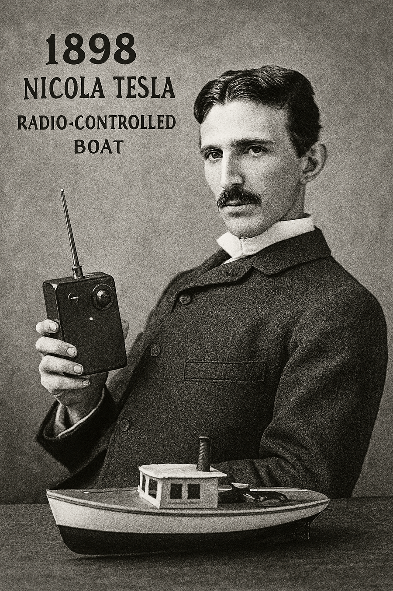
Elektronikus háztartási gépek Megjelentek az első elektromos porszívók, mosógépek és hűtők, amelyek az otthoni automatizálás alapját képezték
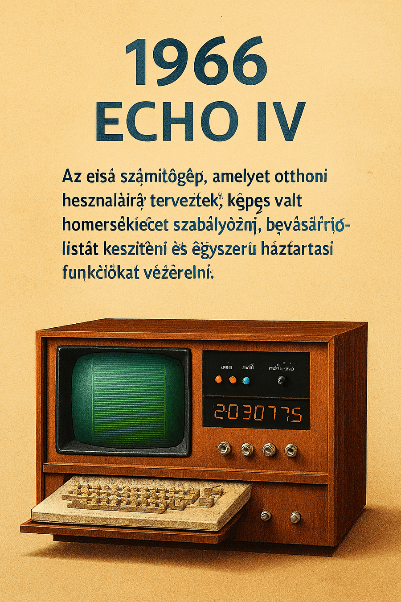
Automatizálás és biztonság Megjelentek az első otthoni biztonsági rendszerek, valamint a központi vezérlőegységek, amelyek már több eszközt integráltak.
Internet és IoT alapok Az internet elterjedése lehetővé tette a távoli vezérlést. Ekkor kezdett kialakulni az „Internet of Things” fogalom, amely az okos otthonok technológiai alapját adja
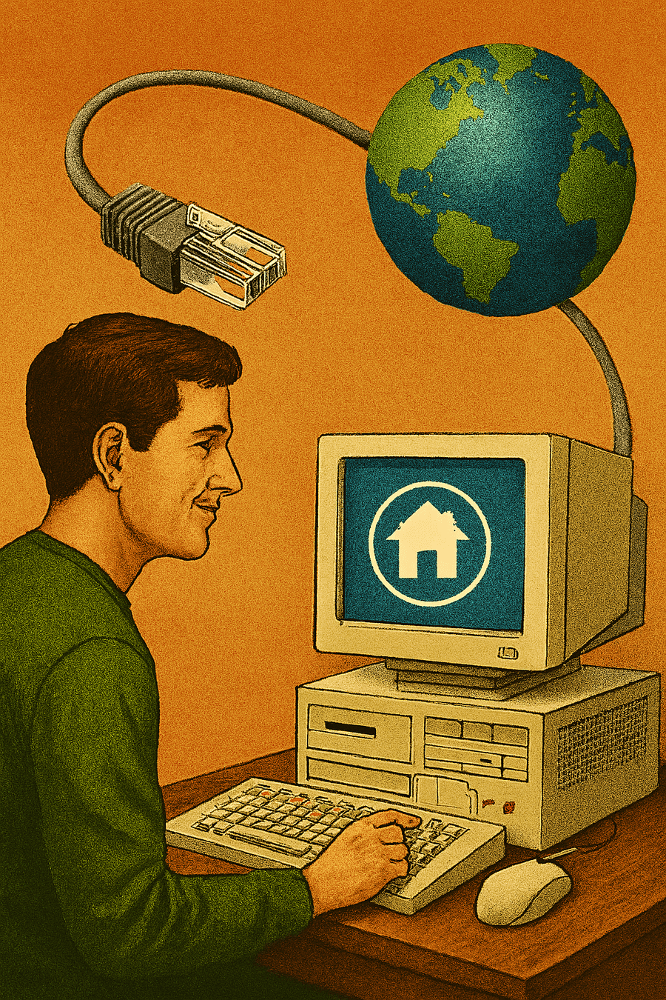
Okostelefonok és vezeték nélküli hálózatok Az okostelefonok megjelenése forradalmasította az otthonvezérlést: mobilalkalmazásokkal lehetett irányítani a világítást, fűtést, biztonsági rendszereket.
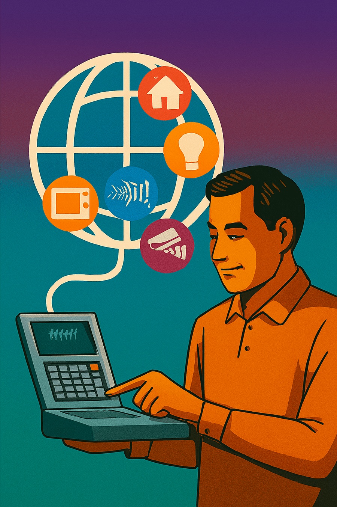
Virtuális asszisztensek Amazon Alexa, Google Assistant és Apple Siri integrációja hozta el a hangvezérlést és a széles körű IoT-eszközök összekapcsolását
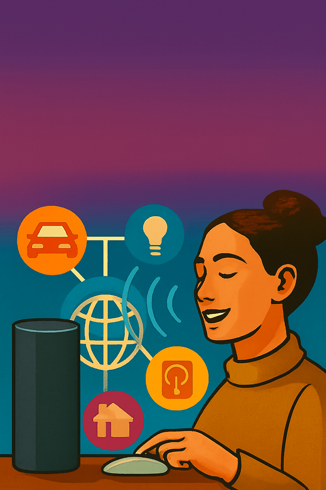
AI és energiahatékonyság Az okos otthonok ma már mesterséges intelligenciát használnak a tanulásra, előrejelzésre és energiaoptimalizálásra. A fenntarthatóság és biztonság került előtérbe
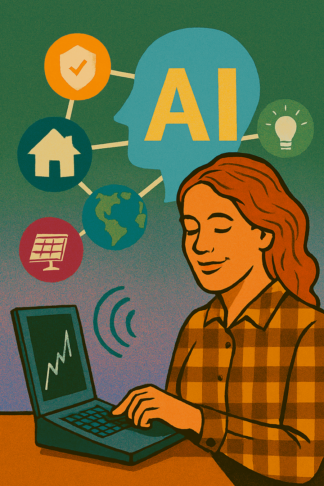
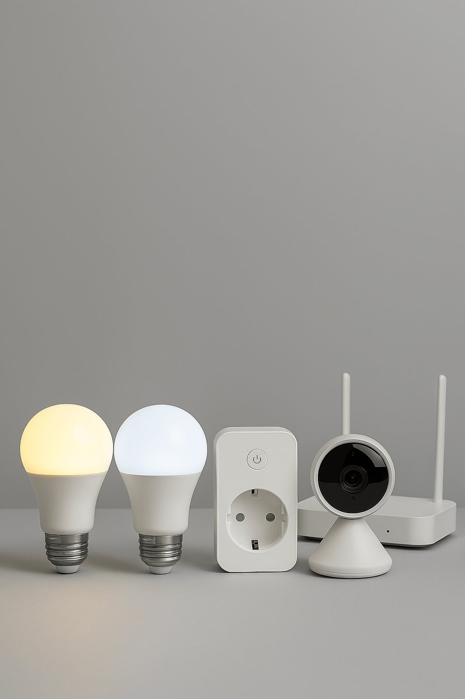
Példák: okos izzók, konnektorok, Wi-Fi kamerák.
Jellemzők: Könnyen telepíthetők, mobilappal vezérelhetők, nem igényelnek szakembert.
Hátrány: Korlátozott integráció, minden gyártóhoz külön alkalmazás kellhet.
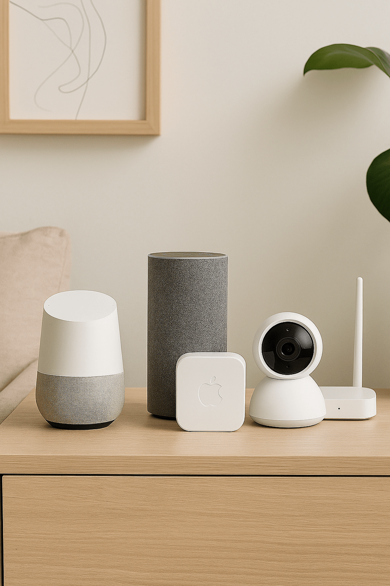
Példák: Google Home, Amazon Alexa, Apple HomeKit, Samsung SmartThings.
Jellemzők: Központi vezérlő (hub) integrálja az eszközöket, hangvezérlés, alap automatizálás.
Hátrány: Nem minden gyártó kompatibilis, összetett forgatókönyvek korlátozottak.
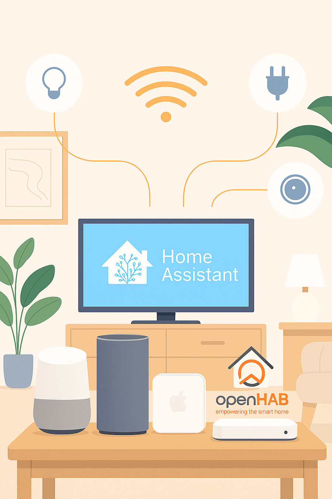
Példák: Home Assistant, OpenHAB.
Jellemzők: Nagyon rugalmas, sokféle protokollt támogat (Zigbee, Z-Wave, Matter, Wi-Fi).
Hátrány: Technikai tudást igényel, beállítása időigényes.
Példák: Loxone, KNX, Chameleon.
Jellemzők: Teljes házvezérlés (világítás, fűtés, árnyékolás, biztonság, energiamenedzsment).
Hátrány: Magas költség, szakember szükséges a telepítéshez.
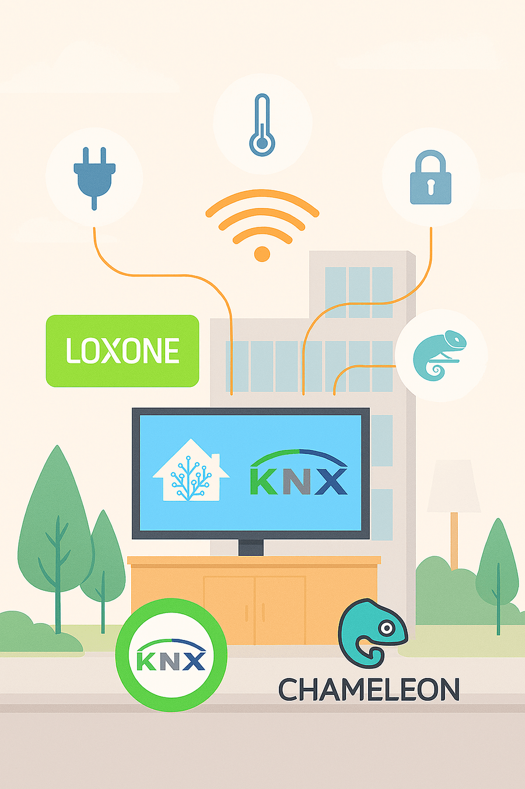
Moduláris szemlélet: eszközök → szenzoradatok → szabályok/AI → automatizmusok.
| Operációs rendszer / platform | Fő jellemző | Támogatott protokollok |
|---|---|---|
| Home Assistant OS | Nyílt, erősen testreszabható (Raspberry Pi, NUC, VM) | Zigbee, Z-Wave, MQTT, Wi‑Fi, Thread (közösségi integráció) |
| OpenHAB | Java-alapú, platformfüggetlen, moduláris | Zigbee, Z-Wave, MQTT, RF, Wi‑Fi |
| ESPHome | ESP32/ESP8266, YAML konfiguráció, HA integráció | Wi‑Fi, MQTT (edge eszközök) |
| Tasmota | Könnyű firmware Sonoff/Shelly/ESP eszközökön | Wi‑Fi, MQTT |
| Apple HomeKit | iOS integráció, erős biztonság | Bluetooth, Wi‑Fi, Thread |
| Google Home | Hangvezérlés, Google ökoszisztéma | Wi‑Fi, Bluetooth, (Matter/Thread ökoszisztéma) |
| Samsung SmartThings | Felhő + hub, mobilbarát | Zigbee, Z-Wave, Wi‑Fi |
Az okosotthonokban leggyakrabban használt IoT operációs rendszerek a Home Assistant OS, OpenHAB, Tasmota és ESPHome; míg az eszközök között kiemelkednek az Amazon Echo, Philips Hue, Google Nest, és okos zárak, termosztátok, kamerák.
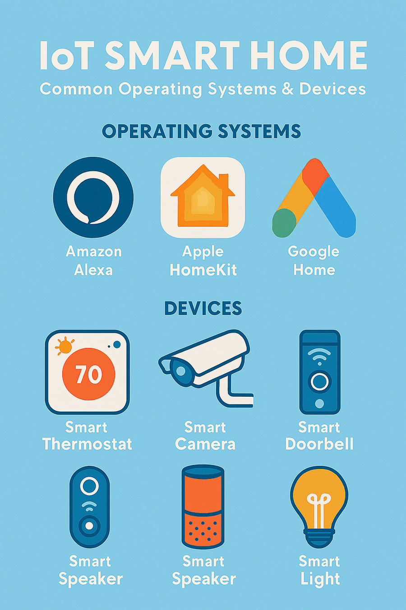
Eszközök → protokollok (Zigbee, Z‑Wave, Wi‑Fi, Thread/Matter) → integráció az OS‑ekbe.
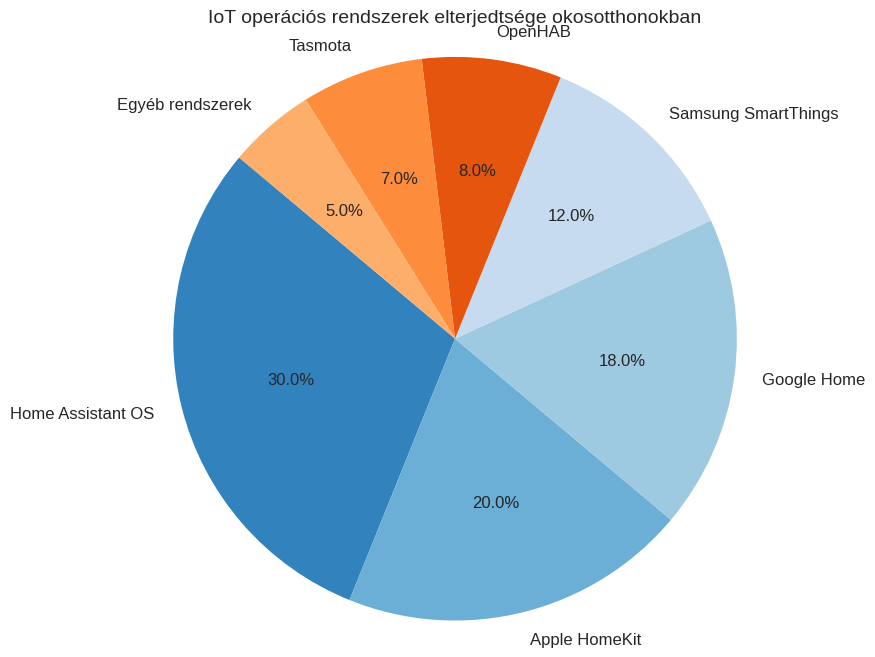
Az okosotthonok, az okosvárosok és az AI összekapcsolása révén a legnagyobb lehetőségek az energiahatékonyság, a közlekedés optimalizálása, a biztonság növelése és a személyre szabott szolgáltatások kialakítása. Az otthonokból érkező adatok a városi rendszerekkel összehangolva intelligens, fenntartható és kényelmes életkörnyezetet teremtenek
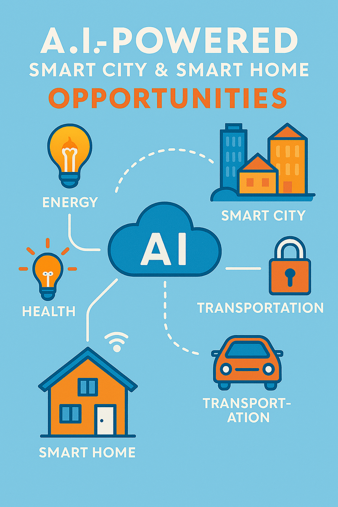
Otthoni fogyasztásadatok + városi hálózat optimalizálása
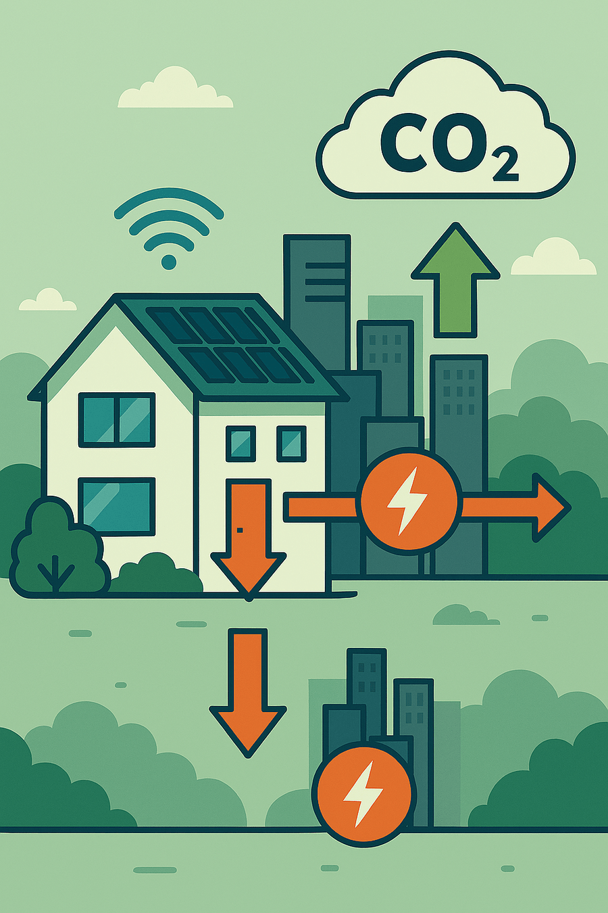
Otthoni és városi szenzorháló integrált riasztáskezeléssel
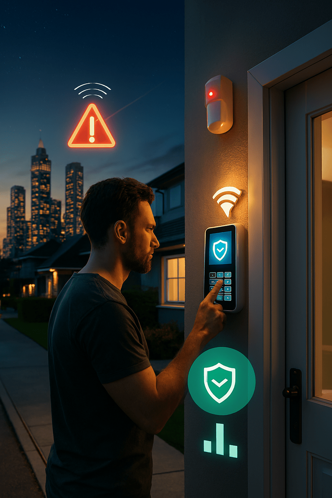
Levegőminőség, korai jelzések; városi szintű beavatkozás
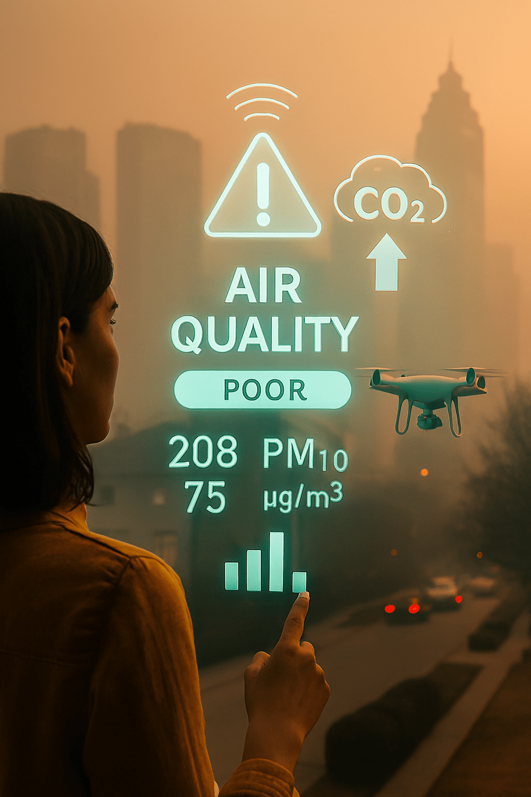
AI ajánlások (útvonal, energia, programok)
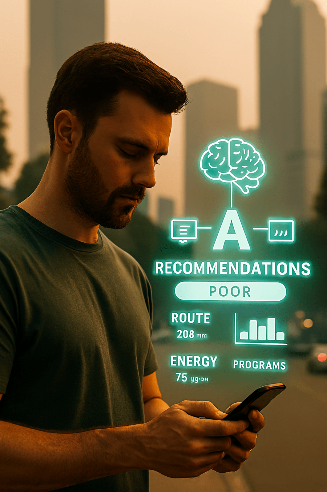
V2G (Vehicle-to-Grid) technológia lesz, ahol az autó akkumulátora tárolja a ház napelemei által termelt energiát, vagy csúcsidőben visszatáplál a városi hálózatba, segítve az energiaoptimalizálást.
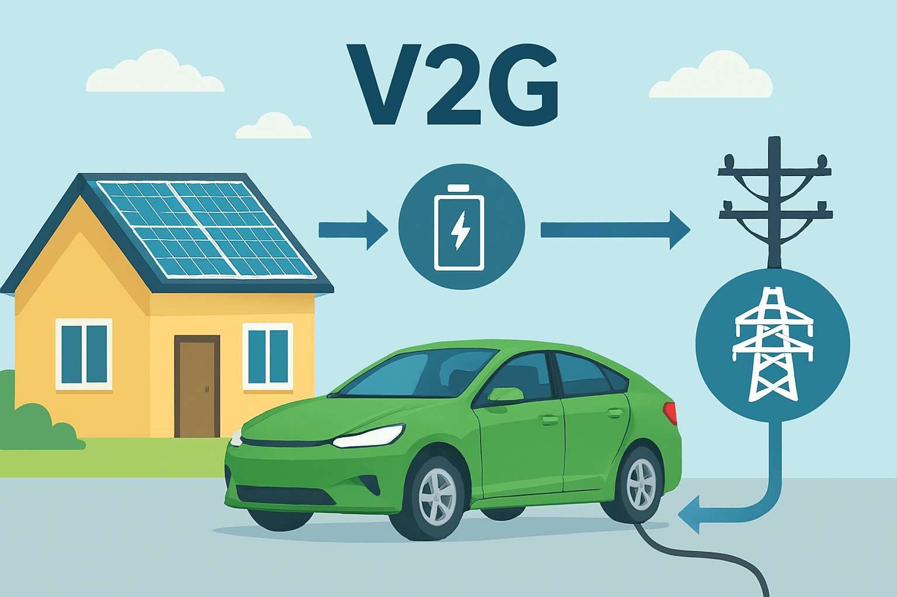
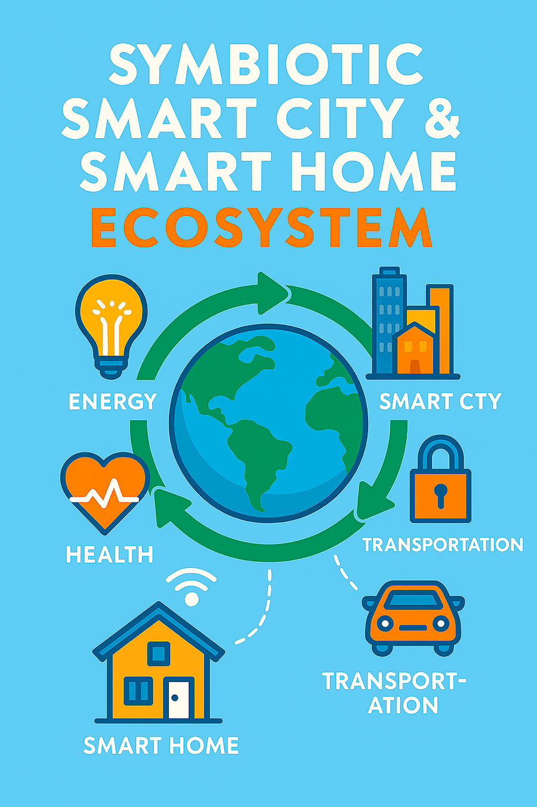
Ha a ház érzékeli, hogy a lakója fázik, automatikusan beavatkozik és a megfeleő pontra melegebb levegőt irányít.
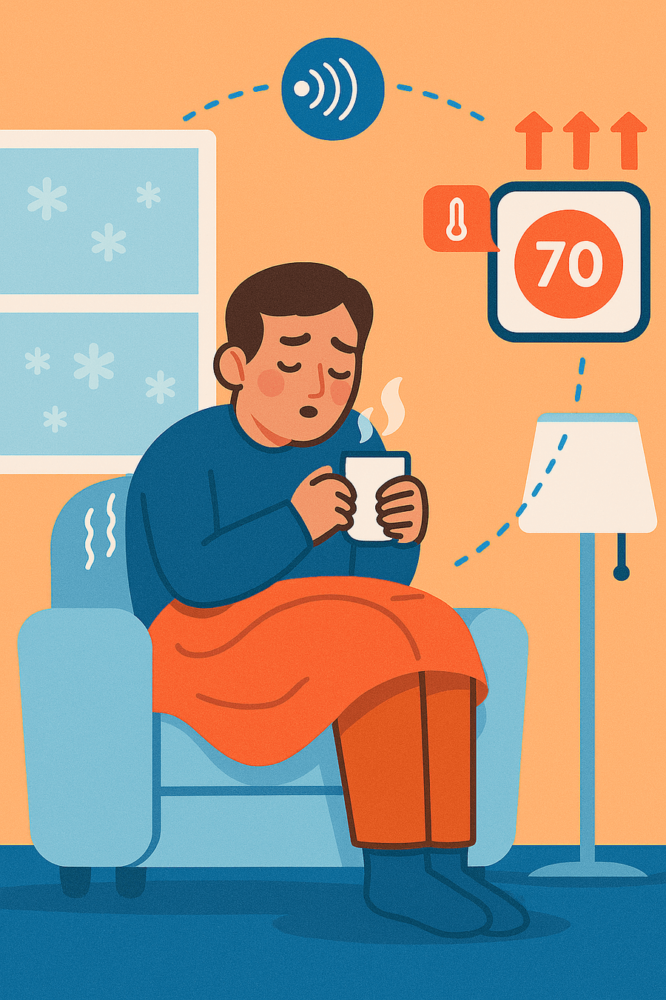
Rövid Hatótávolságú (Lokális) Protokollok
Alkalmazási Réteg Protokollok
| Protokoll | Energia | Hálózat típusa | Fő előny |
|---|---|---|---|
| Zigbee / Z-Wave | Alacsony | Mesh (Hub szükséges) | Hosszú akkumulátor-élettartam, megbízható otthoni hálózat. |
| Wi-Fi | Magas | Star (Router-központú) | Nincs szükség külön hubra, nagy sávszélesség. |
| MQTT / CoAP | Nagyon alacsony | Alkalmazási réteg | Könnyűsúlyú üzenetküldés, ideális szenzorokhoz. |
| Thread | Alacsony | IP-alapú Mesh | Magas biztonság, a Matter gerince. |
A protokoll határozza meg, hogy az eszközök hogyan "beszélnek" egymással.
A Mesh hálózat lényege, hogy az eszközök nemcsak a központhoz kapcsolódnak, hanem egymáshoz is.
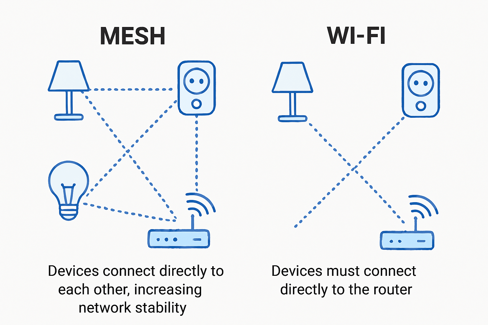
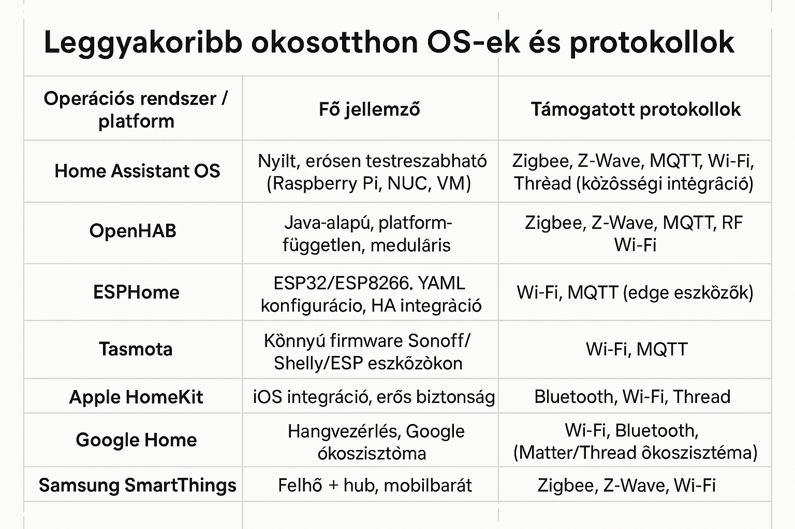
A lakóhelyi energiaciklusok (okos termosztátok), a közlekedési szokások (okosváros forgalom) és a vásárlási minták (személyre szabott ajánlatok) összekapcsolásával az AI egy rendkívül részletes, személyes profilt állít fel. Ez súlyosan sértheti az adatvédelmet.
Alapvető feltétel, hogy az okosotthonokból a városi hálózat felé csak aggregált, anonimizált adatok kerüljenek továbbításra (pl. "a környék átlagos energiafogyasztása" és nem "Sándor háztartásának percenkénti fogyasztása").
Fő Kockázatok az Integrációban
Okosotthoni (fogyasztás, mozgás) és városi adatok összekapcsolása.
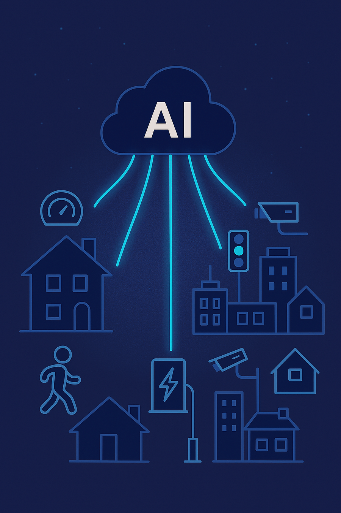
Gyenge végpont (pl. egy olcsó okoskapcsoló) a hálózatba vezető út.
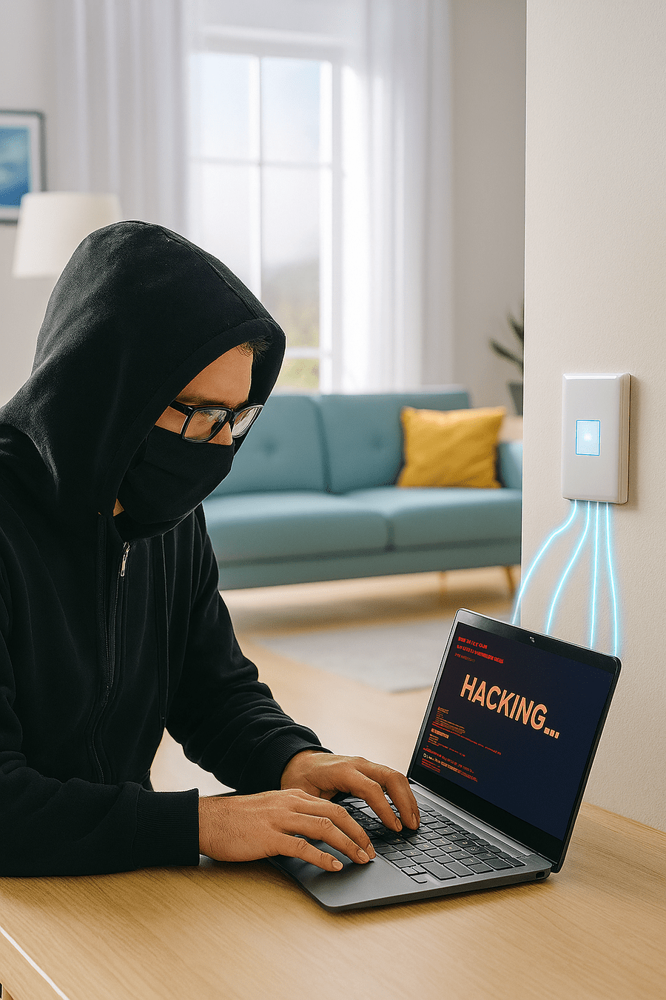
A városi AI felhő nagy célpont a támadóknak.
Egy rosszul konfigurált, elavult firmware-rel rendelkező okos izzó vagy kamera könnyen belépési ponttá válhat. Ezen keresztül a támadó hozzáférhet a helyi hálózathoz, majd a városi rendszerekhez is, ha azok nem megfelelően vannak szegmentálva.
szabvány egyik célja, hogy egységesítse a biztonsági eljárásokat és megbízható titkosítást alkalmazzon már az eszközök szintjén is.
A Matter hálózat egy új, nyílt szabvány az okosotthonok számára, amely lehetővé teszi a különböző gyártók eszközeinek zökkenőmentes együttműködését. Célja, hogy megszüntesse a kompatibilitási problémákat, és egységes kommunikációs alapot teremtsen az IoT világában.
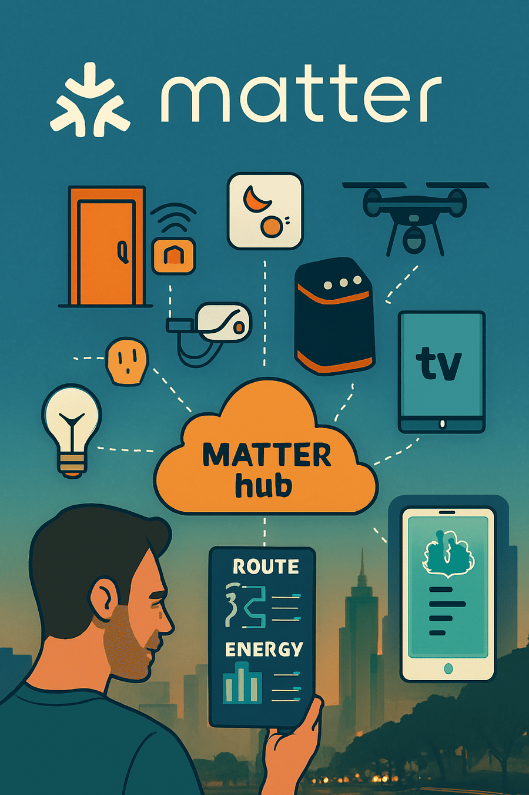
amelyet a Connectivity Standards Alliance (korábban Zigbee Alliance) hozott létre.
Eredetileg Project CHIP néven indult 2019-ben.
: Apple, Google, Amazon, Samsung, és sok más gyártó
Interoperabilitás: különböző gyártók eszközei (pl. lámpák, termosztátok, zárak) képesek együttműködni.
Egyszerű párosítás: QR-kódos vagy NFC-s csatlakoztatás.
Biztonságos kommunikáció: end-to-end titkosítás.
Offline működés: helyi hálózaton is működik, nem függ felhőszolgáltatásoktól.
Több protokoll támogatása: Wi-Fi, Ethernet, Thread, Bluetooth LE
| Funkció | Matter szerepe |
|---|---|
| Világítás | Bármely gyártó lámpája vezérelhető bármely appból |
| Fűtés/hűtés | Termosztátok egységesen kezelhetők |
| Biztonság | Zárak, kamerák, érzékelők integrálhatók |
| Szenzorok | Hőmérséklet, páratartalom, mozgás – egységesen |
| Hangvezérlés | Alexa, Siri, Google Assistant együttműködik |
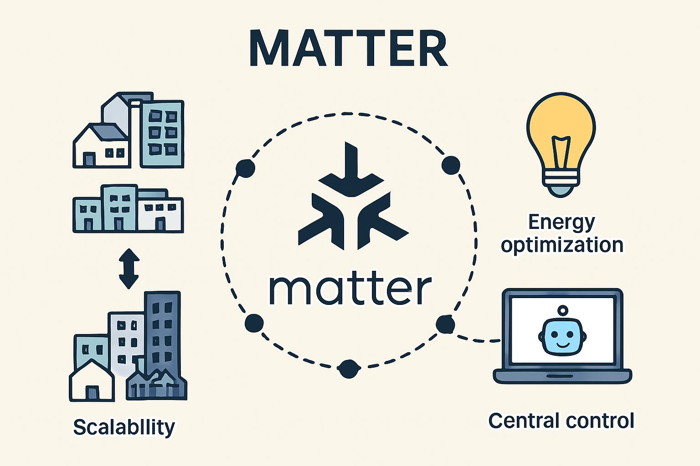
Skálázhatóság: nemcsak otthonokban, hanem épületekben, irodákban, sőt városi rendszerekben is alkalmazható.
Energiaoptimalizálás: Matter-kompatibilis eszközök segítenek az energiafogyasztás monitorozásában.
Központi vezérlés: AI rendszerek könnyen integrálhatók a Matter protokollon keresztül.
Thread-alapú eszközök: pl. Eve, Nanoleaf, Nest.
Wi-Fi eszközök: pl. Philips Hue (Bridge-en keresztül), Meross.
Platformok: Apple HomeKit, Google Home, Amazon Alexa, Samsung SmartThings.
A kritikus adatok feldolgozásának nagy részét az okosotthonon belül kell megtartani (pl. a Home Assistant hubon), csak a végrehajtási parancsokat és az összesített statisztikákat szabad elküldeni a felhőbe. Ez a decentralizáció növeli a biztonságot és csökkenti a felhőfüggőséget.
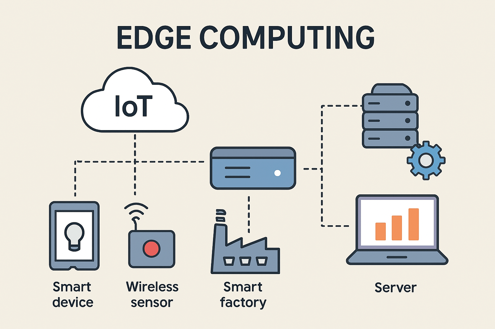
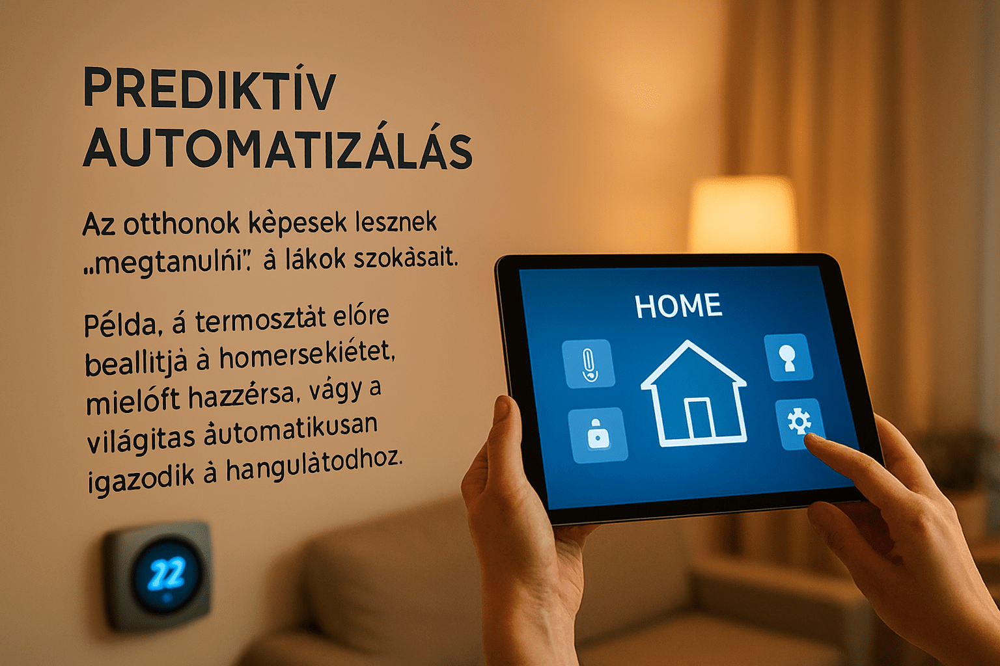
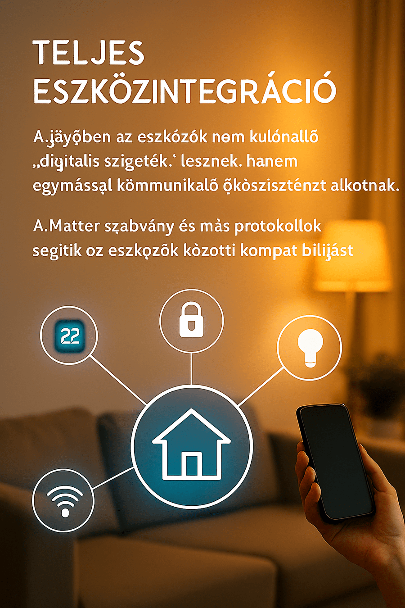
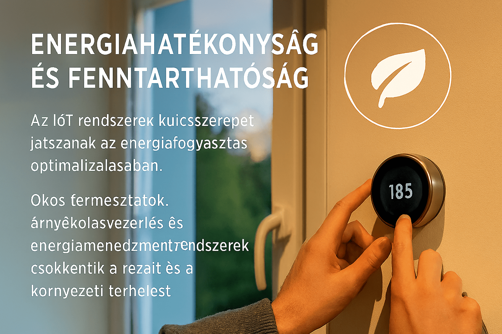
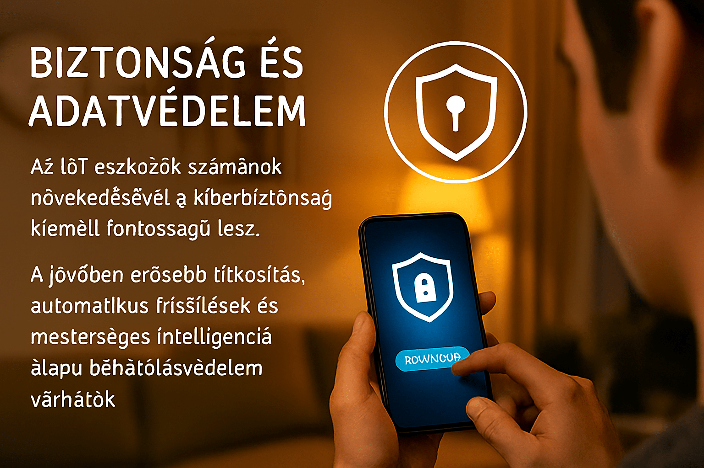
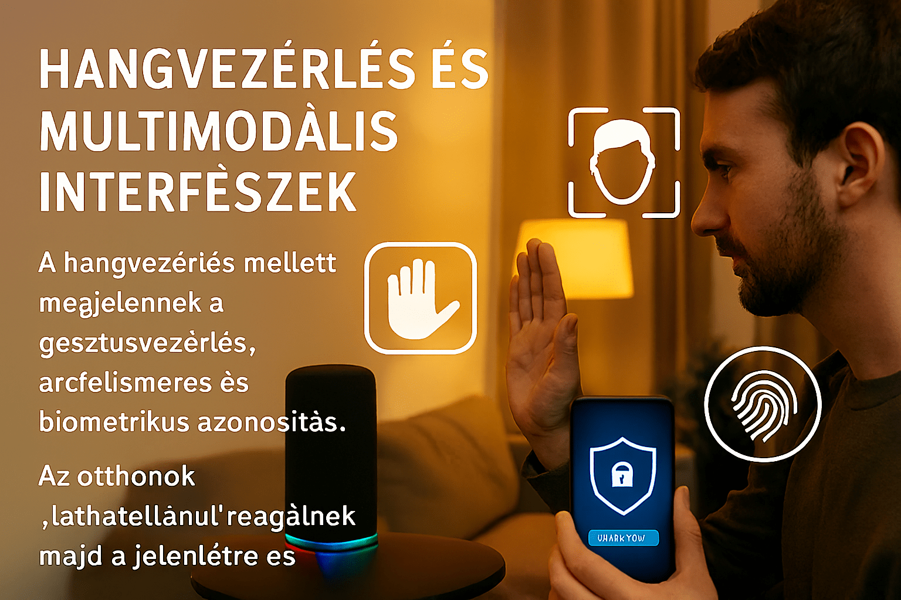
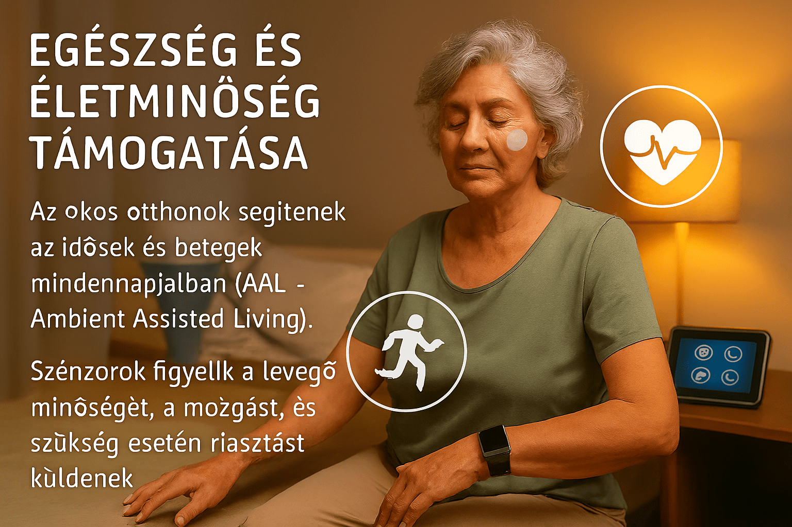
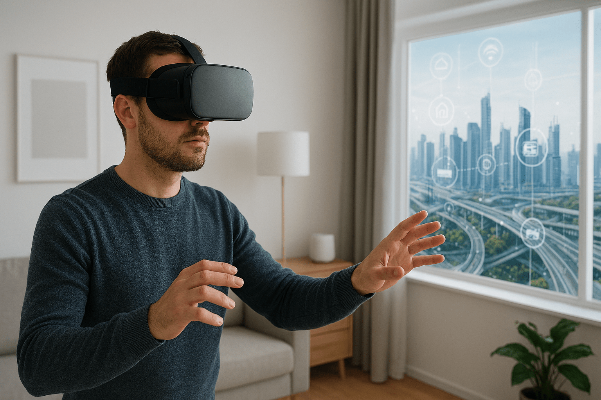